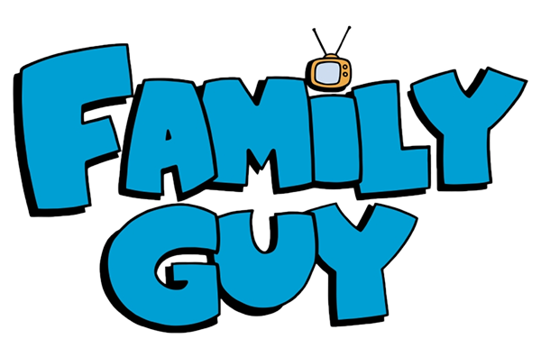
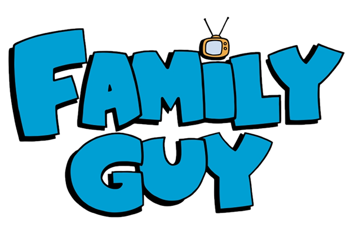

Stewie Griffin
O excêntrico filho de 1 ano, Stewie está sempre equipado com Rupert e com sua arma laser, e algumas vezes, querendo dominar o mundo e matar Lois. Em The Real Live Griffins, Stewie foi interpretado por Ashley Olsen. Apesar de ter apenas 1 ano de idade, Stewie tem a mente muito mais evoluída e madura do que as outras crianças, menos quando o assunto é sexo. Stewie tem um forte sotaque britânico, e de acordo com Seth MacFarlane, Stewie é um "Rex Harrison do mal". Stewie chama Peter de "Gordão", e em "Brian & Stewie", Stewie considera Brian seu melhor amigo.
Curiosidade
Em uma entrevista feita há alguns anos, McFarlane fez uma revelação incrível. Embora isso não tenha sido deixado claro na série, McFarlane afirmou ser o bebê Stewie gay.
Entendendo Stewie
O bebê dos Griffins está constantemente cometendo atos criminais, como roubo, assassinato de secundários, assalto a carros e vários outros pontos que fazem Stewie ser violento. Além de todas estas ocasiões, alguns adultos não entendem este vocabulário com uma intenção de agredir emocionalmente as pessoas, achando "fofas" suas falas.
Em "O Homem de Branco", ao falar com o líder do culto, ele entende o diálogo de Stewie, segundos após matá-lo.
Em "Um Herói se Senta ao Lado", durante o jogo de baseball da companhia da Fábrica Cuca Fresca, Stewie pede para Lois e Bonnie calarem a boca, e elas não mostram reação. No mesmo episódio, Stewie acha que Joe é um tipo de ciborgue controlado por uma máquina (no caso, a cadeira de rodas), e durante a comemoração da vitória do jogo na casa de Joe, Stewie aponta para ele perguntando qual é o segredo da "máquina", e Joe o pega atenciosamente no colo lhe contando a história do que o levou a se tornar paraplégico.
Stewie se abre para estudar sobre vários assuntos, sendo de programas infantis até livros sobre artes marciais. Em "Um Herói se Senta ao Lado", Stewie fica fascinado pelo programa infantil Teletubbies, e está volta e meia assistindo seu show favorito, chamado "Fazenda da Alegria", como podemos ver em "Stewie ou Karina", quando Stewie se disfarça de uma garota chamada Karina Smirnoff para fazer parte do elenco do programa, e em "Estrada para a Europa", Stewie foge para a Europa para tentar participar do programa, mas vê que não era como ele esperava.
Em "A Vida de Brian", após Brian ser morto atropelado, a perda de seu amigo lhe toca profundamente, e o novo cão Vinny entende a preocupação do bebê. No episódio da volta de Brian (Um Natal da Pesada), um papai Noel no shopping entende o que Stewie fala.
Quando Stewie e Brian ficam fascinados pelas músicas da cantora canadense Anne Murray em "Chris em Crise", eles vão até a casa de Anne para esclarecer uma dúvida sobre a canção "Snowbird". Lá, Anne entende o que Stewie diz, e fica realmente assustada quando Stewie amarra ela e a ameaça com uma arma.
Stewie tem a constante gag "Cool hWip", presente em vários episódios, feita constantemente com Brian, que nunca entende. Em "O Homem Com Dois Brians", Novo Brian entende o sotaque diferenciado de Stewie. O elenco de Star Trek: The Next Generation passa o dia com Stewie em "Nem Todos os Cães Merecem o Céu", e eles inicialmente não entendem o diálogo de Stewie, e então a atriz Denise Crosby que interpreta Tasha Yar em Star Trek: The Next Generation se surpreende quando vê que Stewie raptou ela e todo o elenco, exclamando dizendo que ele é "apenas um bebê", então Stewie a mata. No resto do dia, Stewie tem que aguentar as infantilidades dos outros atores.
Brian e sua ex-namorada Jillian o entendia, mesmo sendo adultos. Lauren Conrad também entende Stewie.
Relacionamentos
Stewie não tem nenhum amigo exceto Brian e Rupert. Nos episódios, percebemos que ele tem uma grande dificuldade em fazer amigos, um exemplo é Galvin Janetti, que em "Partindo Corações" Stewie vai para a casa desse garoto mas diz que ele vai ser feio quando crescer, que tudo é barato em sua casa e etc. Abaixo veremos a relação de Stewie com outras pessoas.
De acordo com Seth MacFarlane no especial de 200 Episódios, ele não tinha ideia de que um dia Stewie e Brian seriam amigos, e que Brian ia ser amigo de Peter e Stewie iria ficar com Rupert, e, em Estrada para Rhode Island, Seth e os produtores juntaram os dois e deu certo. Tanto que em "Um Natal da Pesada", quando Stewie volta para salvar Brian da morte, no final do episódio, Brian dá uma moldura escrito "Best Friends" para Stewie.
Stewie tem uma rivalidade muito forte com Lois, deixando-o um matricida. Vamos ver alguns casos que ocorreram na série entre os dois.
- Logo no primeiro episódio da série, A Morte Como Uma Sombra, Stewie já tenta matar Lois diversas vezes, por exemplo, ele corta o pé da cadeira que ela senta para cair e morrer, e, mais tarde, ele enfia uma arma de laser em seu sanduíche para atirar nela. A cena de Stewie no quarto é mostrada em "Zig Zag no Tempo".
- De acordo com ele em "Maquinas Mortíferas", quando saia do útero de sua mãe, plantou uma bomba quando saia.
Em "Os Dois Pais de Peter", Stewie começa a gostar de quando Lois bate nele, que de acordo com ele, deixa-o vivo.
Ele passa a amar ela no episódio "Stewie Ama Lois", quando ela costura Rupert após ele ser atacado por um cachorro, mas no final do episódio, Stewie volta a odiá-la.
Stewie não odeia seu pai como ama Lois, mas também não é seu maior fã. Stewie se refere a Peter usando o apelido "gordão". Em "A Cortesia do Pai do Stewie", ele e Peter viram melhores amigos, mas Stewie passa a odiá-lo quando Lois o pega para botá-lo no berço. Para se redimir, Peter leva Stewie para a Disney. Stewie também sempre desconfia que Peter não é seu pai, um exemplo disso é em "A Excelente Aventura de Stu e Stewie", quando ele vê Stu Griffin na TV, mas descobre que é ele no futuro.
Stewie não tem nada contra seu irmão, eles até que mantém uma relação equilibrada, por exemplo, em "Viciado por Conveniência", Stewie vê Chris sendo intimidado por seus colegas do colégio, então ele entra na mochila de Chris e lhe fala o que fazer, deixando Chris ser um dos alunos mais adorados do colégio, mas, dias depois, Chris quer manter Stewie para sempre em sua mochila, e Stewie tenta fugir, mas no final Chris pede perdão para ele. Stewie também está sempre dando conselhos para ele, por exemplo, em "A Vida de Brian", entrando na loja de animais de estimação, Stewie recomenda que Chris compre um furão.
Aparentemente, Stewie também não odeia Meg nem nada, mas tenta evitá-la de qualquer maneira, principalmente no telefone e quando Meg vê ele dormir. Em "A Criação do Universo", Stewie está na cápsula após voltar do passado, Brian aparece e chama Stewie, mas ele só diz que só com um beijo. Quando Brian diz que vai chamar a Meg, Stewie acorda imediatamente.
Cabeça do Stewie
Em "Colados, Separados", é mostrado num flashback que Stewie tinha a cabeça de um bebê normal, mas ele bate ela no teto e ganha a forma de uma bola de futebol americano, mas em várias ocasiões, um exemplo é "O Homem de Branco", aparece Stewie nascendo com sua cabeça que conhecemos. O seu meio-irmão Bertram tem uma cabeça com a forma muito parecida. Em "A Criação do Universo", é mostrado que Leonardo da Vinci, seu ancestral, tem uma cabeça igual a dele. Stewie tem mostrado girar a cabeça em incríveis ângulos, como podemos ver em "Stewie Mata Lois" e "Intriga Nacional". Em "O Suco Está Solto", Chris e O.J. Simpson usam Stewie para jogar futebol americano.
Futuro
Em "A excelente aventura de Stu e Stewie", Stewie trabalha na Quahog Circuit Shack com 35 anos. Ele nunca fez sexo, nem matou Lois ou dominar o mundo, provavelmente por causa da experiência de quase morte dele, no segmento "Stewie B. Goode", quando ele tenta matar seu colega de natação Brad explodindo o posto de salva vidas, mas cai em cima dele e ele fica no inferno por alguns segundos, e sua vida muda completamente. Mas ele volta no passado para impedir que tudo isso aconteça.